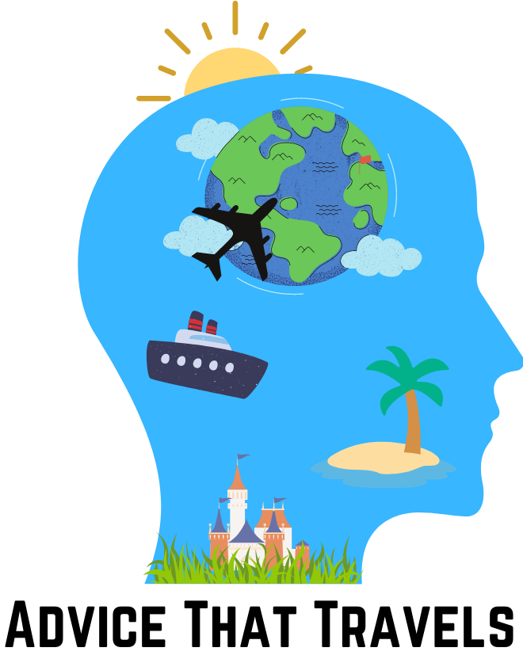
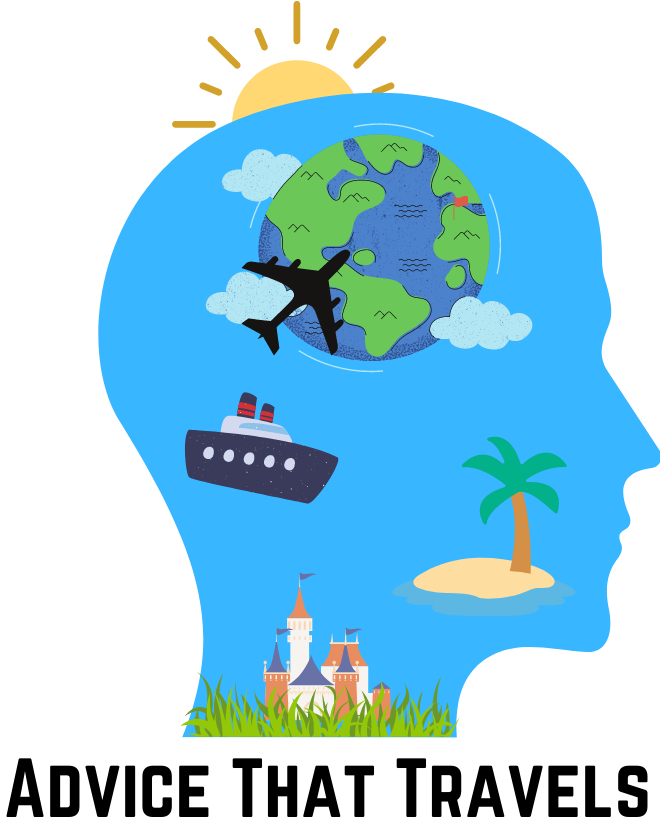

WELCOME
Hello fellow dreamers, My name is Isaias, and I'm on a mission to help you see the world without breaking the bank. I've been obsessed with travel since I was a kid, but it wasn't until after college that I really caught the bug to travel more. With a bit of saving and some creative planning, I've been lucky enough to explore some of the most incredible destinations on the planet - from the bustling streets of Amsterdam to the stunning landscapes of Glacer National Park.
But here's the thing: I don't have a luxury job that lets me jet off whenever I please, and I don't have a trust fund that keeps my passport full of stamps. Nope, I'm just a regular person like you, working hard and dreaming big. But I've learned that with a bit of ingenuity and a willingness to step outside your comfort zone, a fantastic trip is always right around the corner
So that's why I started this travel advice website - to help you see the world, no matter what your budget or travel style. Whether you're looking for tips on finding the best deals, insider information on the most unique and offbeat destinations, or just some good old-fashioned travel inspiration, I've got you covered.
What kind of trip?
If you're here now, chances are you already have a destination in mind or at least an idea of where you want to go. But now comes the fun part: deciding what kind of trip you want to take. And that's where I come in. Sometimes knowing where you want to go is the easy part - the challenge is figuring out how to make the most of your time there. That's why I like to split my trips into two categories: vacationing and traveling.
Each style of travel has its own unique benefits, and maybe a combination of the two is what you're after. But ultimately, one tends to dominate the other. To help you decide which is right for you, I've broken down the key differences and advantages of each below. So let's dive in and discover the best way to make your dream trip a reality!


-
Experience More
This type of journey often yields multiple experiences at once, pushing you beyond your comfort zone and immersing you in the heart of adventure. -
Always On The Move
While it may not appeal to everyone, constant movement is a vital component of travel that keeps the spirit of adventure alive. It enables you to thoroughly explore your destination while ensuring a restful night's sleep once the day's activities have concluded. -
Flexibility
Should you ever second-guess the itinerary you've chosen for your journey, the beauty of flexible travel is that you can readily pivot and continue your explorations. By making arrangements on the go instead of pre-planning every detail, you have the freedom to adjust your course if necessary while still enjoying a fantastic trip. I personally love spontaneous traveling, although it's worth noting that having some plans in place can be beneficial at times. Traveling empowers you to step outside your comfort zone and immerse yourself in experiences that the average vacationer might never encounter. -
Random Adventures and Things
If you're eager to escape the hustle and bustle of the city and explore charming small towns, traveling is the perfect choice. By embarking on a journey, you can discover a new approach to experiencing your destination, uncovering hidden gems that may go unnoticed by the average vacationer. Traveling affords you the opportunity to relax and appreciate the smaller, more intimate aspects of your destination. -
Transportation Is Key
Getting around during your travels can greatly impact the amount of sights you're able to take in. The good news is, there are plenty of transportation options to choose from. Check out our transportation section to explore the various modes available and ensure you don't miss out on any of the excitement.
Traveling
-
Stress Free
One of the greatest benefits of taking a vacation is the opportunity to unwind and escape the stress of daily life. After all, relaxation is often the primary goal of any getaway. So if you're in need of a break from the hustle and bustle of everyday life, consider planning a vacation that allows you to focus on rest and relaxation. -
Better for a Budget
Whether you're looking for a luxurious escape or a more modest getaway tailored to your needs, a vacation can be customized to fit your preferences and budget. At the core of budgeting lies the art of finding all-inclusive deals, which can make your trip even more enjoyable and relaxing by offering options that let you leave your wallet behind. Planning ahead with a precise budget can be particularly helpful, as it allows you to know exactly what you're getting into and make the most of your trip. -
Experience One Place to the Fullest
A vacation focused on a single destination can offer a unique and immersive experience, allowing you to fully explore the area without worrying about transportation or getting around in taxis or Ubers. Without the stress of constantly moving from place to place, you can truly embrace the sights, sounds, and culture of your destination, making for a truly unforgettable vacation. -
Perfect for Shorterm
For people with limited time, this type of trip can be an ideal solution. Whether due to a busy schedule or other commitments, not everyone has the luxury of taking extended vacations or lengthy breaks. However, by choosing a trip that focuses on a single destination or that offers all-inclusive packages, travelers can make the most of the time they have available. -
Family favorite
If you're planning a family vacation, this kind of trip can be a great option regardless of your family's size and interests. Plus, there are often special deals available for families traveling together, such as discounts on group activities or bundled pricing for food and entertainment.
Vacationing
 

Location
Selecting a destination to visit can be an enjoyable yet challenging task. The sheer number of options can be overwhelming, making the decision process difficult. However, it's essential to step outside your comfort zone and explore new horizons. For many adventurers, the opportunity to travel arises only once a year, underscoring the importance of thorough research to ensure a fulfilling experience. By carefully selecting your destination, you can optimize your travels and create unforgettable memories."
Advice
Think about the place with the most options
For me, the biggest factor in choosing a destination is often the amount of time I have available for my travels. If I only have a week to spare, I'll typically opt for a tropical island or a particular city, with a set itinerary that includes exploring local cuisine, enjoying the nightlife, attending events, or simply kicking back with a drink. However, if I have a longer timeframe - say, two weeks - I'm keen to maximize my experiences and explore as much as possible. Such trips may entail visiting multiple cities or even countries, and by the end of it, I'll likely be exhausted. Yet, the satisfaction of knowing I've made the most of my time off is incredibly rewarding and borders on addictive.


Transportation
Once you've arrived at your destination, it's essential to plan how you'll get around. For shorter trips, calling an Uber or utilizing your hotel's transportation services can be a more cost-effective option than renting a car. However, for avid travelers, transportation can make or break the trip. The key objective becomes 'how much can I see in the time I have,' and the means of transportation play a crucial role in achieving this goal. Each mode of transportation allows you to experience more and more of what the destination has to offer, making it a vital consideration when planning your travels.
Advice
Vactioning
Based on my personal experience, using Uber is a convenient way to get around during a vacation. In smaller areas, walking, renting bikes, or utilizing transportation services like Uber can be sufficient for getting around. The advantages of this approach include not having to deal with the hassle of picking up or returning a rental car, avoiding fluctuating gas prices, and allowing you to indulge in alcohol consumption without worrying about driving under the influence. Choosing the right transportation method can greatly enhance the overall experience of your vacation.
Traveling
In my opinion, renting or leasing a car is the optimal way to explore a destination while traveling. While some people prefer using multiple plane rides or trains to get around, this approach often limits their experience to the towns or cities where their transportation drops them off. In contrast, having a car gives you the freedom to venture beyond urban areas and experience the more rural parts of the country or destination you're visiting. To me, this is the essence of truly immersing oneself in a destination and making the most of a trip.


Lodging
Choosing the right lodging can be a make or break for your trip, especially if you end up sleeping in a haunted house or a hotel with bedbugs. So, to avoid any spooky surprises, always do your research and read those reviews! And if you're not trying to break the bank, don't worry, you can still find a place with great amenities without having to sell a kidney. Just remember, at the end of the day, a good night's sleep is crucial, unless you want to look like a sleep-deprived zombie on your adventure.
Advice
Vacationing
Selecting the right hotel for your vacation is crucial for a comfortable and enjoyable stay. Your lodging is your home away from home, so it's worth investing in a place that meets your expectations and budget. Consider looking for deals and promotions that fit your preferences, such as complimentary breakfast, spa services, or sightseeing packages. These add-ons not only save you money but also enhance your overall experience. As a bonus tip, take advantage of the free breakfast offered by many hotels - it's a perfect opportunity to fuel up for the day ahead and save money on meals. Plus, you can indulge guilt-free and splurge on a fancy dinner later. It's a win-win situation!
Traveling
Finding the right place to stay while traveling can be tricky, but the rewards are worth it when you're able to visit a variety of destinations during your trip. When it comes to selecting a place to sleep, there are a few important factors to consider. First and foremost, establish your budget and then consult online reviews to help weed out the less-than-stellar options. Sometimes camping is a better choice than risking a shady hotel in a sketchy part of town. If you're visiting a destination with hostels, compare prices to hotels before committing to a shared living space. While staying in a hostel can be a fun experience, the lack of privacy and noise level can interfere with much-needed rest. Another piece of advice is to hold off on booking a hotel until the day of your arrival. This may seem scary at first, but it can actually offer more flexibility and freedom. I've personally been to locations where I loved it so much that I wanted to stay longer, and by not having a hotel pre-booked, I was able to extend my stay without any hassle.

Solo or Group Adventure?
Traveling alone and traveling with a group are both great choices, each with their own unique advantages. Solo travel allows for more freedom, personal growth, and the opportunity to truly immerse oneself in the destination. Meanwhile, group travel offers the chance to bond with friends or family, share experiences, and divide costs. Ultimately, the choice depends on personal preferences and travel goals.
Advice
Both options, traveling solo or with friends, have their benefits and drawbacks. Ultimately, it comes down to personal preference and what you want to gain from your trip. However, there are a few things to consider when making this decision. Firstly, don't wait for someone else to join you on your trip. If you have the opportunity to travel but no one is available to come with you, don't let that stop you from going on a solo adventure. Traveling alone can be incredibly rewarding and allow you to have a more introspective and self-reliant experience. Don't let the fear of going alone hold you back from experiencing the world.
On the other hand, traveling with friends can be a great way to create lasting memories and share experiences with people you care about. When choosing who to travel with, it's important to consider their interests and mindset. You want to make sure that you are compatible travel companions who can compromise and make decisions together. It's no fun when everyone wants to do something different and you're stuck in a situation where no one is happy. So, whether you choose to travel solo or with friends, make sure you're making the decision that's right for you. Don't let fear or pressure from others hold you back from exploring the world and creating unforgettable memories.

Document Everything!
Documenting a vacation or traveling trip can be just as important as the trip itself. Capturing memories through photos can last a lifetime and bring back all the special moments shared with loved ones. Not only is it important to take as many pictures as you can, but also to indulge in souvenirs and items unique to the destination. These items serve as tangible reminders of the experiences and emotions felt during the trip. In this way, documenting a trip is not just a way to preserve memories, but also a way to continue reliving them long after the trip has ended.
Advice
I can assure you, there will never be enough pictures or souvenirs to capture the essence of your trip. Personally, my phone is overflowing with over 10,000 photos and I used to think it was excessive. But as time passed, I realized that I wish I had more. Looking back, I wish I had bought more items from the places I visited and captured more moments. Memories may last a lifetime, but they can fade over time, so it's crucial to live in the moment and document everything. And don't be afraid to be the friend who takes endless pictures - trust me, your friends will appreciate it in the future. My advice is to always do more, whether it's taking more pictures or collecting small mementos. I love the idea of collecting something small from each location you visit. Others might prefer to collect larger items and mail them back home to save space in their suitcases. It all depends on the person! And don't forget to take note of specific locations and activities that could help other travelers plan their trips in the future.